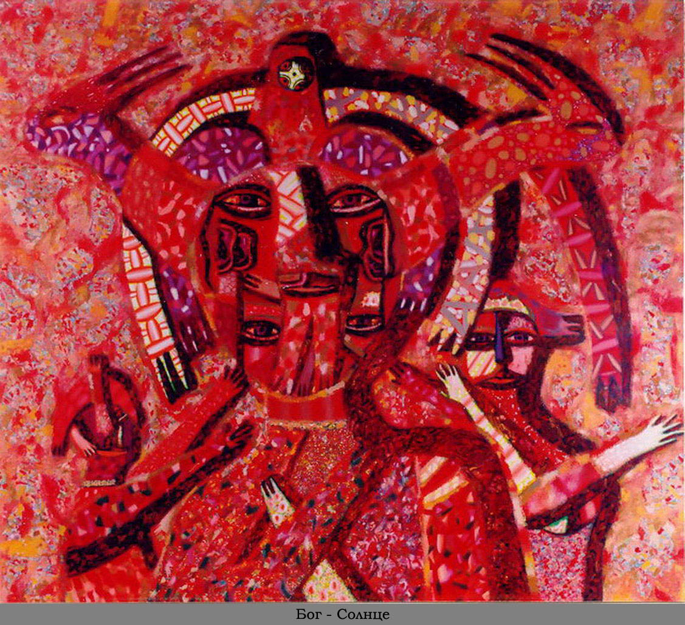
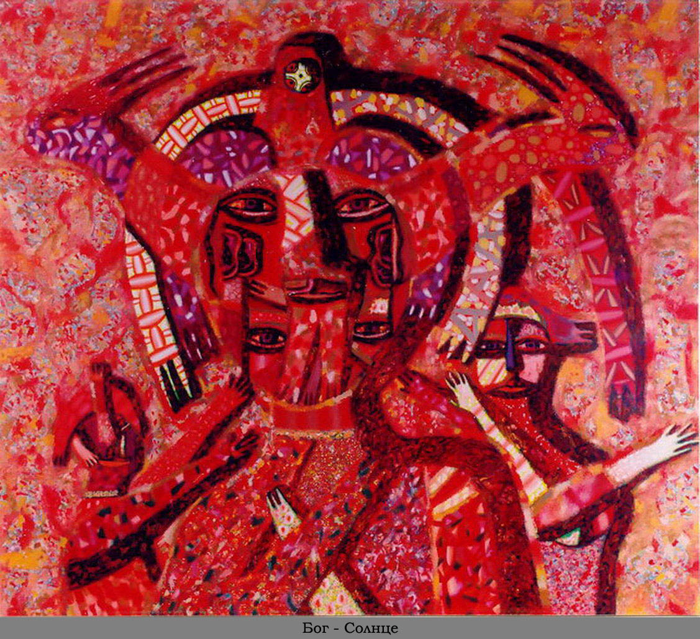

Биография
Родился 21 октября 1957 года в г. Воткинске. Очень любит музыку П.И. Чайковского. В детстве он часто бывал, в Доме-музее композитора, играл в парке около дома. Часто любовался водной гладью и великолепными восходами и закатами солнца.
«Детство прошло в районе железнодорожного вокзала, из окна частного деревянного дома, где я жил, постоянно наблюдал живописный дым паровозов, слышал, их манящие, зазывные гудки, видел уходящие вдаль вагоны. Из окна было видно поле и голубые силуэты холмов, за которыми скрывались поезда. Перед окном росла большая вишня и, когда созревали ягоды, можно было, протянув из окна руку, отведать эти сладкие, сочные, красные плоды. Вся эта атмосфера создавала в моей душе особый романтический настрой. Мне всегда хотелось в детстве узнать, что же находится за этими голубыми холмами. Сесть однажды в один из поездов и уехать далеко-далеко за эти горы, по моему представлению, в сказочный город, с кремлевскими башнями, с золотыми куполами церквей, с многоэтажными домами, на Красную площадь, в столицу моей Родины, в город Москву, именно туда, за те голубые холмы, мне казалось, уходили все поезда.
С раннего детства я любил рисовать. Однажды в магазине я видел, как местный художник продавал копию с картины известного русского художника Виктора Васнецова «Три богатыря», мне она очень понравилась. Я умолял родителей купить эту картину, но в то время для нашей семьи это было дорого, тогда у меня зародилась мечта - научиться хорошо рисовать и самому нарисовать эту картину. В этом же возрасте, когда мне было 5 лет, я однажды вечером спал на руках у деда, обнявши его за плечи, неожиданно проснулся и задал деду вопрос: «Дед, ты умрешь?» Он сказал: «Да». Я снова спросил: «И я никогда после этого тебя не увижу?» Он сказал: « Да». Я снова его спросил: «Я умру?» Он сказал: «Да». Я не поверил и еще раз спросил: «Ты не ошибаешься?» Он сказал: «Нет». С тех пор закончилось мое детство, закончились счастливые безмятежные дни, с тех пор я каждую секунду чувствовал несправедливость и неправду в ответах деда, с тех пор начались мучительные поиски смысла жизни и правильного справедливого ответа на этот вопрос, с тех пор началась моя духовная практика.
С 11 до 16 лет я учился в изостудии при городском Доме пионеров. Мой педагог, Косты- лев Лев Григорьевич, был молодым художником, очень любил искусство, у него был веселый, легкий характер, он любил жизнь. Занятия проходили весело, в непринужденной обстановке. Он часто приносил книги по искусству, много рассказывал о разных художниках, показывал красивые репродукции с картин. Я очень любил эти занятия и своего первого учителя. У него я научился самому главному - любить искусство.
С 1974 по 1978 годы я учился в Свердловском художественном училище, там я получил первые серьезные знания в области реалистического искусства. После окончания училища три года работал в детской художественной школе в г. Воткинске преподавателем рисунка и живописи. В эти годы серьезно работал в жанре портрета и пейзажа. С 1981 по 1987 годы я обучался в Московской Академии художеств (Московский Государственный Художественный Институт имени В.И.Сурикова). Там я учился у выдающегося народного художника СССР академика живописи Т.Т. Салахова, в своем обучении он делал упор на композиции, обучал искусству создавать сложные многофигурные, живописные картины, в которых главным героем был человек. А также он учил ассоциативно-образному мышлению и творческому подходу ко всему, что ты делаешь. За годы учебы я в полной мере полюбил и оценил русскую культуру с ее огромным духовным потенциалом и тысячелетней историей. Там я начал изучать древнерусскую иконопись и монументальную настенную живопись древнерусских храмов, выезжал на летнюю практику в древнерусские города, где в храмах копировал настенную живопись древнерусских мастеров 16-17 веков. После окончания Академии написал несколько реалистических фигуративных картин и портретов, которые сразу же были закуплены Удмуртским Республиканским музеем Изобразительных Искусств, благодаря этому у меня появились финансовые возможности для дальнейшего творчества.
В 1990 году меня приняли в Союз художников СССР. Но реалистичный стиль не удовлетворял мои творческие потребности, поэтому на протяжении 7 лет, с 1990 по 1997 годы, я занимался авангардным искусством в составе Ижевской творческой группы «Лодка» и Московской творческой группы «Танатос». Я занимался перформансом, инсталляцией, живописью, графикой, скульптурой, видеоартом.
За это время я выработал собственный неповторимый стиль. Его особенности в чем-то были предопределены случаем: так однажды я столкнулся в одном из залов Эрмитажа с древнейшим литьем по металлу, представляющим так называемый Пермский Звериный стиль. Поразило одно - сочетание казалось бы несочетаемого. Языческое предположение, что все живое наделено душой и по природе своей едино, сыграло важную роль в моем становлении, как художника.
Герои моих полотен сочетают в себе качества человека, животного и растения. Эти фантастические существа наделены добротой, они романтичны, непосредственны и чисты как дети. Они живут на красивой чистой планете, которая немного походит на нашу Землю. Эти существа имеют много глаз, много хвостов и ушей, они пушистые и милые, как детские игрушки. Краски на этой планете ярче и чище, там нет заводов и фабрик, там нет войн и конфликтов, там хорошо и спокойно. Такой я хотел бы видеть нашу будущую цивилизацию на Земле.
Другая часть моего творчества представляет собой красивые абстрактные картины, в которых есть элементы растительного орнамента и геометрические формы, отдаленно напоминающие животных, птиц и людей. Меня привлекает абстракция, потому что в ней есть большая свобода выражения. В ней достигается большое разнообразие цветовых и пластических решений. С помощью абстракции я передаю тончайшие интеллектуальные и эмоциональные переживания, которые не навязываются зрителю, а интерпретируются им в зависимости от его настроения, таким образом достигается неоднозначное, свободное восприятие изображения. Картины подходят к любому интерьеру еще и потому, что в них не глубокое, а ограниченное пространство, элементы картины имеют плоскостную трактовку с небольшим объемом. Это хорошо сочетается с плоскостью стены, не разрушая ее. Эти абстракции - это как бы искусство тех фантастических существ, которые живут на той фантастической планете. Мои абстракции наполнены красотой и положительной энергией. Когда на них смотришь, рождаются различные чувственные ассоциации, мысли и настроения. Они не загружают зрителя сложными интеллектуальными проблемами нашей цивилизации, а пробуждают в человеке позитивный настрой. Главное в искусстве, по моему мнению, это не поиск стиля, а внутреннее самосовершенствование. Для истинного художника важно откровение, когда можно понять и выразить собственное «Я», оценить себя как часть мироздания. Мои работы космичны. В этом проявляется мое стремление к любви, Богу, гармонии, познанию себя. Космос - это поток сознания, а призвание настоящего мастера в том, чтобы стать посредником, связующим звеном между человечеством и тайнами мира».


 



 120х130 см.jpg)